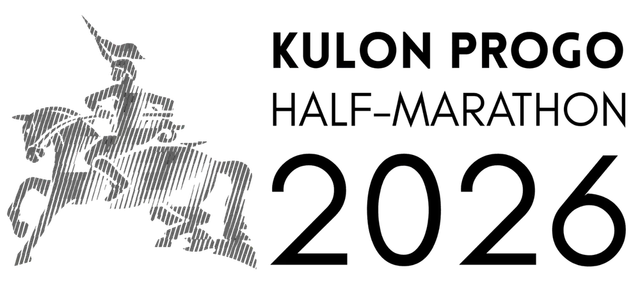
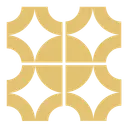
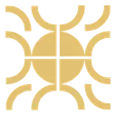
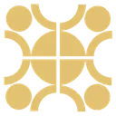

Half Marathon
21,32 km
Start04.30 WIB
- Saran tiba
- 03.15
- Batas finis
- 08.30 (4 jam)
Titik cut-off
KM 11,8 dalam 2 jam 15 menit; KM 19,4 dalam 3 jam 45 menit

RACEWEEKEND Situs resmi ↗KULON PROGO HALF MARATHON 2026
Minggu, 29 November 2026 · Alun-Alun Wates
Panduan peserta, keluarga, dan pendamping: jadwal lomba, race pack, dan tempat yang layak dikunjungi.
HARI LOMBA
Start dan finish di Alun-Alun Wates. Junior Dash memakai titik start dan finish terpisah di alun-alun.
21,32 km
Start04.30 WIB
KM 11,8 dalam 2 jam 15 menit; KM 19,4 dalam 3 jam 45 menit
10,19 km
Start05.00 WIB
KM 5,7 dalam 1 jam 5 menit
5,22 km
Start05.20 WIB
KM 4 dalam 45 menit
800 m
Start06.15 WIB
Halaman Race Day Info resmi (dicek 26 November 2026) belum memuat: parkir, penutupan jalan, antar-jemput, kontak medis/darurat, penitipan tas, dan fasilitas toilet. Kami tidak menebaknya. Pantau Instagram resmi atau hubungi penyelenggara lewat halaman Kontak.
COURSE DETAIL
Ringkasan rute tiap kategori dari halaman resmi KPHM. Start dan finish di Alun-Alun Wates.
Angka tanjakan, rentang elevasi, dan batas usia mengikuti halaman kategori di kphm.myendura.id per 26 November 2026. Gambar rute lama memuat angka elevasi yang berbeda; ikuti situs resmi bila ada perbedaan.
RACE PACK COLLECTION
27–28 November 2026
10.00–20.00 WIB
Ibis Yogyakarta International Airport
Jl. Wates–Purworejo, Seling, Temon Kulon, Temon, Kulon Progo
Peserta anak juga memerlukan surat persetujuan orang tua atau wali. Formulir tersedia di halaman resmi.
Periksa folder Spam atau Promosi, lalu hubungi tim KPHM lewat Instagram @kulonprogohalfmarathon atau halaman Kontak. Tampilkan QR pusat bantuan.
Jangan bagikan QR Race Pack Anda selain kepada perwakilan.
START CORRAL
Pen dikelompokkan berdasarkan estimasi waktu finis dan tertera pada nomor BIB.
| Kategori | PEN A | PEN B | PEN C |
|---|---|---|---|
| Half Marathon | 1 jam 50 menit | 2 jam 10 menit | 2 jam 30 menit + |
| 10K | 1 jam | 1 jam 10 menit | 1 jam 20 menit + |
| 5K | 30 menit | 35 menit | 40 menit + |
PERATURAN PERLOMBAAN
Ringkasan peraturan resmi. Teks lengkap dan yang berlaku ada di Syarat & Ketentuan KPHM.
BEYOND THE RUN
KPHM memadukan olahraga, wisata, budaya, dan komunitas: event destinasi dengan rute melewati lanskap, kehidupan, dan tradisi Kulon Progo. Pelari elite, pelari rekreasi, pemula, keluarga, anak-anak, hingga pelari inklusif disambut di sini. Presented by Endura.
Zona sorak warga dan pertunjukan budaya di sepanjang rute.
Kategori inklusif dengan pelari pendamping, termasuk peserta berkursi roda.
Bazar UMKM lokal, komunitas, dan musik.




RENCANA AKHIR PEKAN
Contoh rencana awal yang bisa disesuaikan dengan kategori, penginapan, dan kondisi tubuh.

JELAJAH KULON PROGO
Alam, budaya, dan kuliner. Pastikan jam buka dan biaya sebelum berangkat.
Informasi destinasi masih data awal. Cek akses, jam buka, cuaca, dan kondisi terkini ke pengelola.
SCENERY & DESTINATION
Latar foto dari materi resmi KPHM 2026. Ketuk gambar untuk melihat materi aslinya.
EKSKLUSIF · MEDAL REVEAL
Medali resmi untuk Half Marathon, 10K, 5K, dan Junior Dash. Bagian belakangnya menyediakan ruang ukir untuk personal best Anda. Geser untuk melihat lainnya, ketuk gambar untuk memperbesar.
EKSKLUSIF · OFFICIAL APPAREL BY GULF+
Jersey biru untuk Half Marathon, 10K, 5K, dan Junior Dash. Di punggungnya ada simbol The 4 Mantra dan tagline Every Step Matters.
PETA & NAVIGASI
Buka lokasi dan petunjuk arah di Google Maps.
RENCANAKU
Tempat pilihan, anggaran, dan checklist tersimpan di browser perangkat ini.
Website panduan perjalanan ini melengkapi, bukan menggantikan, pengumuman resmi penyelenggara.